Gallery
Freely licensed photographs from Wikimedia Commons. Click any image for a larger view. Each caption credits the author, license, and source.
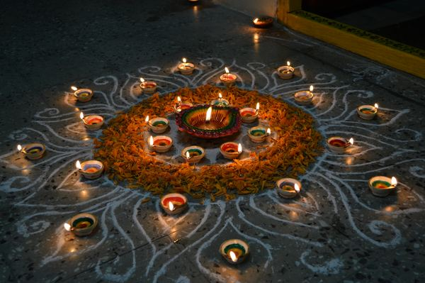
Photo: siddarth varanasi · CC BY 2.0
Photo: Rameshng · CC BY-SA 3.0
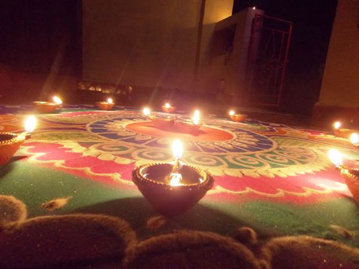
Photo: Dinesh Korgaokar · CC BY-SA 4.0
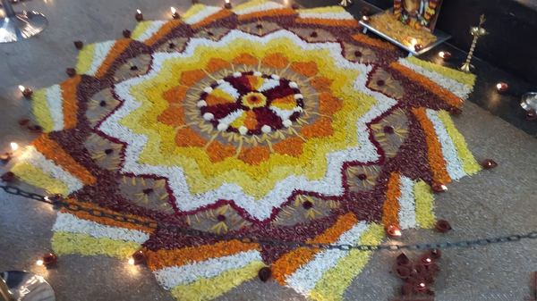
Photo: NinadMysuru · CC BY-SA 3.0
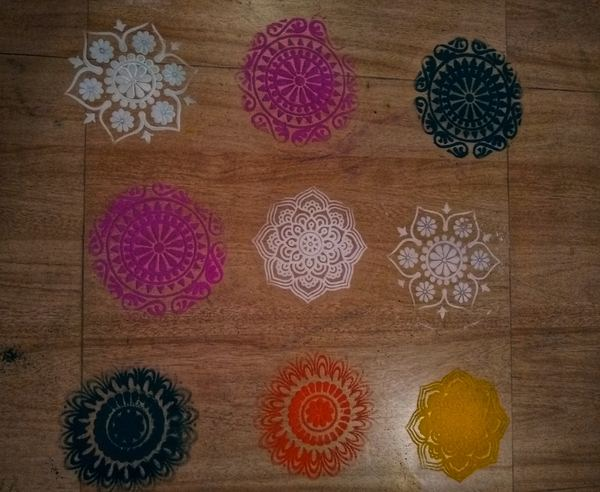
Photo: Alokjain19883105 · CC BY-SA 4.0
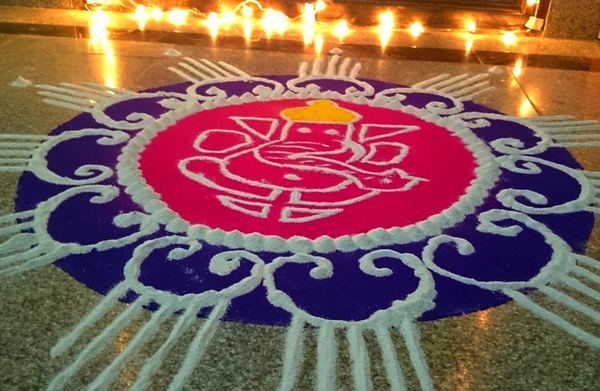
Photo: Ramesh NG · CC BY-SA 2.0
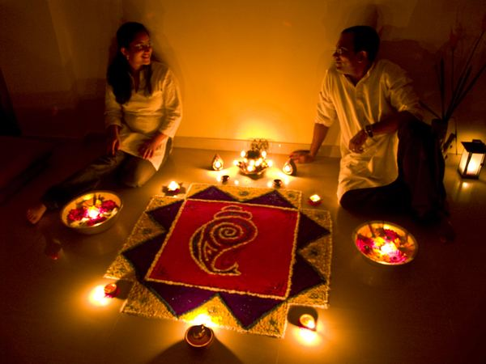
Photo: Subharnab Majumdar · CC BY 2.0
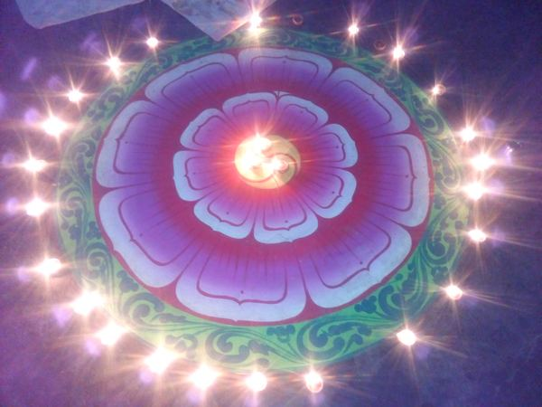
Photo: Devraj poudel · CC BY-SA 4.0
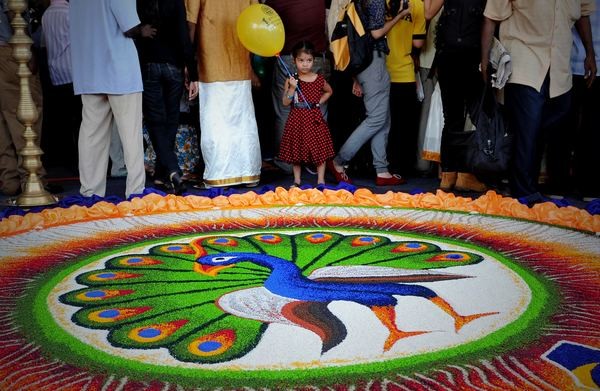
Photo: Firdaus Latif · CC BY-SA 2.0
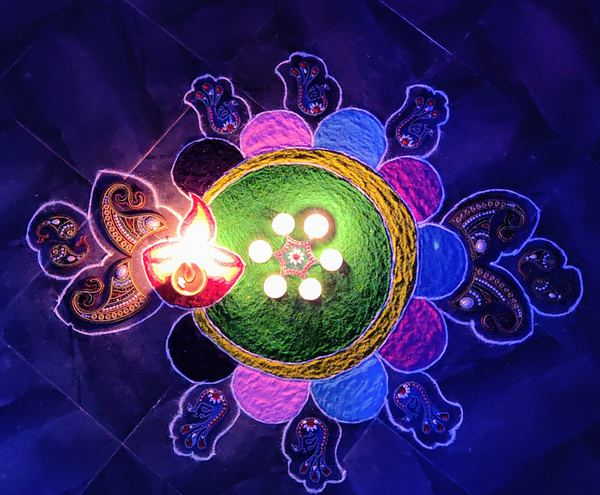
Photo: Arnav · CC BY-SA 4.0
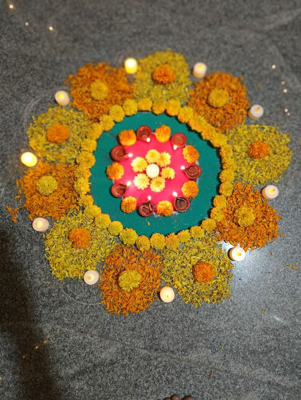
Photo: Ranjithraj · CC BY-SA 4.0
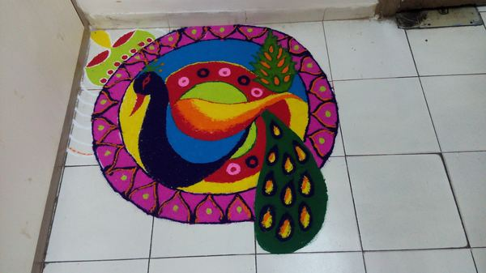
Photo: Rachana3111 · CC BY-SA 4.0
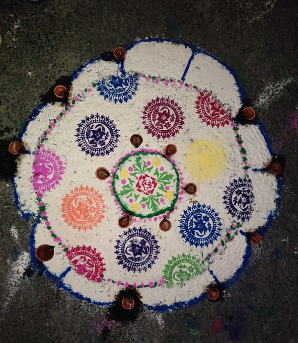
Photo: Akashdoley13 · CC BY-SA 4.0
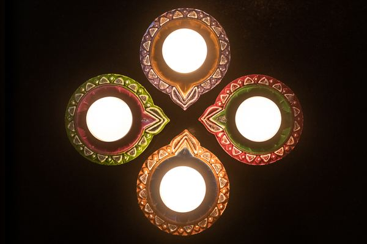
Photo: PilotChicago · CC BY-SA 4.0
Photo: Jayantaghoshdastidar · CC BY-SA 4.0
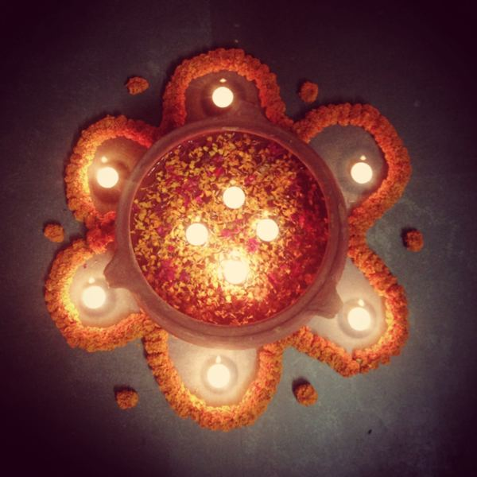
Photo: vibhabamba · CC BY-SA 3.0
Attribution summary
- Diyas set in a rangoli — siddarth varanasi, CC BY 2.0. Source on Commons.
- Diwali fireworks in Bangalore — Rameshng, CC BY-SA 3.0. Source on Commons.
- Decorative rangoli in Goa — Dinesh Korgaokar, CC BY-SA 4.0. Source on Commons.
- Floral Deepavali decorations — NinadMysuru, CC BY-SA 3.0. Source on Commons.
- Diwali rangoli design — Alokjain19883105, CC BY-SA 4.0. Source on Commons.
- Diwali 2013 celebrations — Ramesh NG, CC BY-SA 2.0. Source on Commons.
- Rangoli and lights — Subharnab Majumdar, CC BY 2.0. Source on Commons.
- Dipawali in Biratnagar — Devraj poudel, CC BY-SA 4.0. Source on Commons.
- Deepavali at Batu Caves — Firdaus Latif, CC BY-SA 2.0. Source on Commons.
- Colourful Diwali rangoli — Arnav, CC BY-SA 4.0. Source on Commons.
- Flower floor decoration — Ranjithraj, CC BY-SA 4.0. Source on Commons.
- Peacock rangoli — Rachana3111, CC BY-SA 4.0. Source on Commons.
- Rangoli at Tezpur University — Akashdoley13, CC BY-SA 4.0. Source on Commons.
- Diwali diyas — PilotChicago, CC BY-SA 4.0. Source on Commons.
- Illuminated Diwali night — Jayantaghoshdastidar, CC BY-SA 4.0. Source on Commons.
- Diwali lights close-up — vibhabamba, CC BY-SA 3.0. Source on Commons.
Visitors: —
(this page: —)